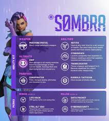

Sombra as a Support Hero

Sombra's move to the Support role gives her a different way to help her team. Instead of mainly focusing on attacking enemies, she can use her abilities to support teammates and help them during fights.
What's Different?
- Her main focus is helping teammates.
- She uses her hacking abilities in new ways.
- She can provide support while still disrupting enemies.
- Her role changes how players approach the game.
Why the Change Is Interesting
I think this change is interesting because Sombra already had a unique play style. Moving her into Support gives players a different way to use the same character. It also shows how much a hero's role can change the way a game is played.